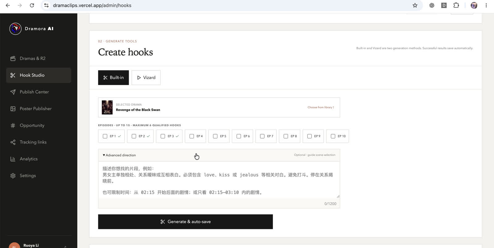
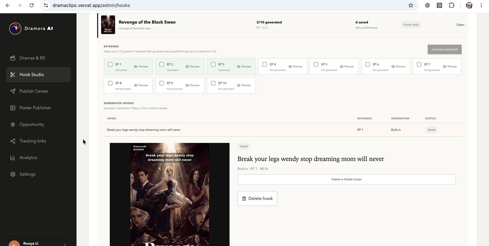
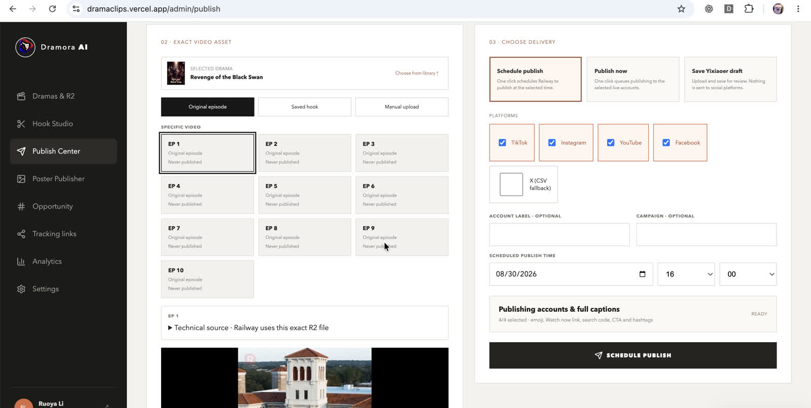
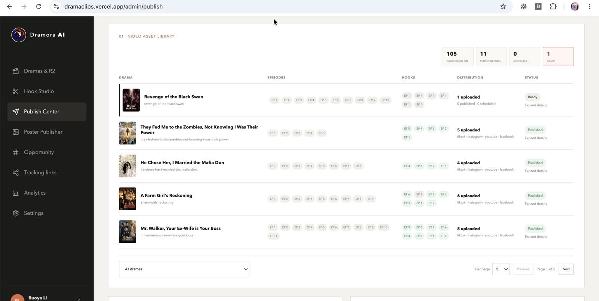

Durable handoffs
Approved hooks are explicitly saved before they become publishable assets. This keeps creative review separate from automated generation.
Case study / independent software engineering
An AI-assisted short-drama content platform that connects creative production, publishing operations, and audience flow in one system.
Behind the scenes
Public viewers see a preview. The important product work happens behind it: helping an operator move from raw source material to a reviewed, publish-ready asset.
Admin workflow walkthrough / onboarding, hook generation, publishing, and asset operations.




Short-form content moves through metadata, source video, editing, review, publishing, links, and analytics. DramaClips makes those transitions explicit and durable so the operator can focus on choosing what is worth making and sharing.
Supabase stores the operational record. Cloudflare R2 stores durable media. Railway runs long-lived rendering and worker processes. Provider integrations stay replaceable and isolated from the public preview experience.
Approved hooks are explicitly saved before they become publishable assets. This keeps creative review separate from automated generation.
Uploads, rendering, and publishing are treated as asynchronous workflows with visible progress and recoverable states.
Internal redirects and tracking events are kept distinct from provider conversions or revenue that the system cannot verify.